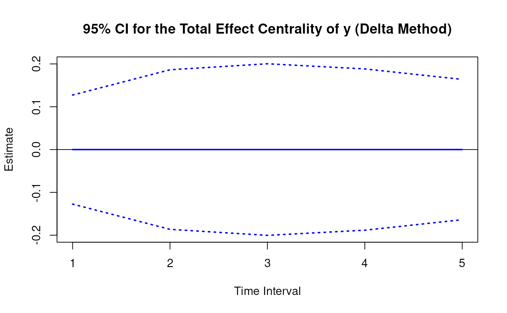
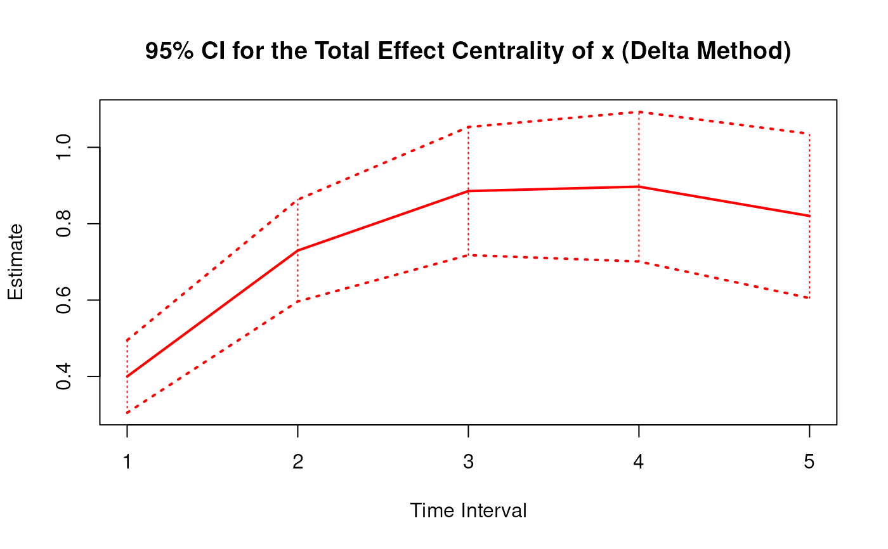
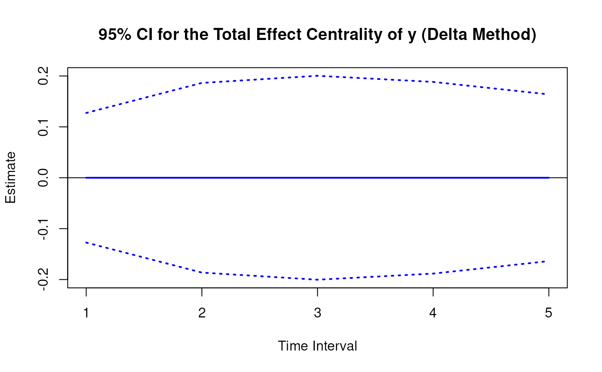
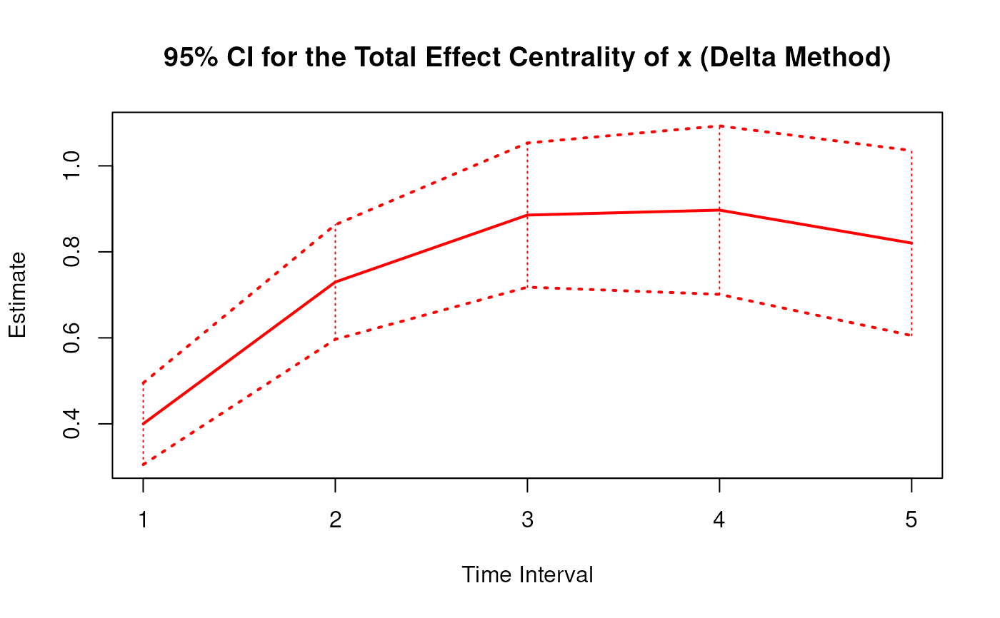

Delta Method Sampling Variance-Covariance Matrix for the Total Effect Centrality Over a Specific Time Interval or a Range of Time Intervals
Source:R/cTMed-delta-total-central.R
DeltaTotalCentral.RdThis function computes the delta method sampling variance-covariance matrix for the total effect centrality over a specific time interval \(\Delta t\) or a range of time intervals using the first-order stochastic differential equation model's drift matrix \(\boldsymbol{\Phi}\).
Arguments
- phi
Numeric matrix. The drift matrix (\(\boldsymbol{\Phi}\)).
phishould have row and column names pertaining to the variables in the system.- vcov_phi_vec
Numeric matrix. The sampling variance-covariance matrix of \(\mathrm{vec} \left( \boldsymbol{\Phi} \right)\).
- delta_t
Vector of positive numbers. Time interval (\(\Delta t\)).
- ncores
Positive integer. Number of cores to use. If
ncores = NULL, use a single core. Consider using multiple cores when the length ofdelta_tis long.
Value
Returns an object
of class ctmeddelta which is a list with the following elements:
- call
Function call.
- args
Function arguments.
- fun
Function used ("DeltaTotalCentral").
- output
A list with length of
length(delta_t).
Each element in the output list has the following elements:
- delta_t
Time interval.
- jacobian
Jacobian matrix.
- est
Estimated total, direct, and indirect effects.
- vcov
Sampling variance-covariance matrix of the estimated total, direct, and indirect effects.
Details
See TotalCentral() more details.
Delta Method
Let \(\boldsymbol{\theta}\) be \(\mathrm{vec} \left( \boldsymbol{\Phi} \right)\), that is, the elements of the \(\boldsymbol{\Phi}\) matrix in vector form sorted column-wise. Let \(\hat{\boldsymbol{\theta}}\) be \(\mathrm{vec} \left( \hat{\boldsymbol{\Phi}} \right)\). By the multivariate central limit theory, the function \(\mathbf{g}\) using \(\hat{\boldsymbol{\theta}}\) as input can be expressed as:
$$ \sqrt{n} \left( \mathbf{g} \left( \hat{\boldsymbol{\theta}} \right) - \mathbf{g} \left( \boldsymbol{\theta} \right) \right) \xrightarrow[]{ \mathrm{D} } \mathcal{N} \left( 0, \mathbf{J} \boldsymbol{\Gamma} \mathbf{J}^{\prime} \right) $$
where \(\mathbf{J}\) is the matrix of first-order derivatives of the function \(\mathbf{g}\) with respect to the elements of \(\boldsymbol{\theta}\) and \(\boldsymbol{\Gamma}\) is the asymptotic variance-covariance matrix of \(\hat{\boldsymbol{\theta}}\).
From the former, we can derive the distribution of \(\mathbf{g} \left( \hat{\boldsymbol{\theta}} \right)\) as follows:
$$ \mathbf{g} \left( \hat{\boldsymbol{\theta}} \right) \approx \mathcal{N} \left( \mathbf{g} \left( \boldsymbol{\theta} \right) , n^{-1} \mathbf{J} \boldsymbol{\Gamma} \mathbf{J}^{\prime} \right) $$
The uncertainty associated with the estimator \(\mathbf{g} \left( \hat{\boldsymbol{\theta}} \right)\) is, therefore, given by \(n^{-1} \mathbf{J} \boldsymbol{\Gamma} \mathbf{J}^{\prime}\) . When \(\boldsymbol{\Gamma}\) is unknown, by substitution, we can use the estimated sampling variance-covariance matrix of \(\hat{\boldsymbol{\theta}}\), that is, \(\hat{\mathbb{V}} \left( \hat{\boldsymbol{\theta}} \right)\) for \(n^{-1} \boldsymbol{\Gamma}\). Therefore, the sampling variance-covariance matrix of \(\mathbf{g} \left( \hat{\boldsymbol{\theta}} \right)\) is given by
$$ \mathbf{g} \left( \hat{\boldsymbol{\theta}} \right) \approx \mathcal{N} \left( \mathbf{g} \left( \boldsymbol{\theta} \right) , \mathbf{J} \hat{\mathbb{V}} \left( \hat{\boldsymbol{\theta}} \right) \mathbf{J}^{\prime} \right) . $$
Linear Stochastic Differential Equation Model
The measurement model is given by $$ \mathbf{y}_{i, t} = \boldsymbol{\nu} + \boldsymbol{\Lambda} \boldsymbol{\eta}_{i, t} + \boldsymbol{\varepsilon}_{i, t}, \quad \mathrm{with} \quad \boldsymbol{\varepsilon}_{i, t} \sim \mathcal{N} \left( \mathbf{0}, \boldsymbol{\Theta} \right) $$ where \(\mathbf{y}_{i, t}\), \(\boldsymbol{\eta}_{i, t}\), and \(\boldsymbol{\varepsilon}_{i, t}\) are random variables and \(\boldsymbol{\nu}\), \(\boldsymbol{\Lambda}\), and \(\boldsymbol{\Theta}\) are model parameters. \(\mathbf{y}_{i, t}\) represents a vector of observed random variables, \(\boldsymbol{\eta}_{i, t}\) a vector of latent random variables, and \(\boldsymbol{\varepsilon}_{i, t}\) a vector of random measurement errors, at time \(t\) and individual \(i\). \(\boldsymbol{\nu}\) denotes a vector of intercepts, \(\boldsymbol{\Lambda}\) a matrix of factor loadings, and \(\boldsymbol{\Theta}\) the covariance matrix of \(\boldsymbol{\varepsilon}\).
An alternative representation of the measurement error is given by $$ \boldsymbol{\varepsilon}_{i, t} = \boldsymbol{\Theta}^{\frac{1}{2}} \mathbf{z}_{i, t}, \quad \mathrm{with} \quad \mathbf{z}_{i, t} \sim \mathcal{N} \left( \mathbf{0}, \mathbf{I} \right) $$ where \(\mathbf{z}_{i, t}\) is a vector of independent standard normal random variables and \( \left( \boldsymbol{\Theta}^{\frac{1}{2}} \right) \left( \boldsymbol{\Theta}^{\frac{1}{2}} \right)^{\prime} = \boldsymbol{\Theta} . \)
The dynamic structure is given by $$ \mathrm{d} \boldsymbol{\eta}_{i, t} = \left( \boldsymbol{\iota} + \boldsymbol{\Phi} \boldsymbol{\eta}_{i, t} \right) \mathrm{d}t + \boldsymbol{\Sigma}^{\frac{1}{2}} \mathrm{d} \mathbf{W}_{i, t} $$ where \(\boldsymbol{\iota}\) is a term which is unobserved and constant over time, \(\boldsymbol{\Phi}\) is the drift matrix which represents the rate of change of the solution in the absence of any random fluctuations, \(\boldsymbol{\Sigma}\) is the matrix of volatility or randomness in the process, and \(\mathrm{d}\boldsymbol{W}\) is a Wiener process or Brownian motion, which represents random fluctuations.
References
Bollen, K. A. (1987). Total, direct, and indirect effects in structural equation models. Sociological Methodology, 17, 37. doi:10.2307/271028
Deboeck, P. R., & Preacher, K. J. (2015). No need to be discrete: A method for continuous time mediation analysis. Structural Equation Modeling: A Multidisciplinary Journal, 23 (1), 61–75. doi:10.1080/10705511.2014.973960
Ryan, O., & Hamaker, E. L. (2021). Time to intervene: A continuous-time approach to network analysis and centrality. Psychometrika, 87 (1), 214–252. doi:10.1007/s11336-021-09767-0
See also
Other Continuous Time Mediation Functions:
DeltaBeta(),
DeltaIndirectCentral(),
DeltaMed(),
Direct(),
Indirect(),
IndirectCentral(),
MCBeta(),
MCIndirectCentral(),
MCMed(),
MCPhi(),
MCTotalCentral(),
Med(),
PosteriorBeta(),
PosteriorIndirectCentral(),
PosteriorMed(),
PosteriorPhi(),
PosteriorTotalCentral(),
Total(),
TotalCentral(),
Trajectory()
Examples
phi <- matrix(
data = c(
-0.357, 0.771, -0.450,
0.0, -0.511, 0.729,
0, 0, -0.693
),
nrow = 3
)
colnames(phi) <- rownames(phi) <- c("x", "m", "y")
vcov_phi_vec <- matrix(
data = c(
0.002704274, -0.001475275, 0.000949122,
-0.001619422, 0.000885122, -0.000569404,
0.00085493, -0.000465824, 0.000297815,
-0.001475275, 0.004428442, -0.002642303,
0.000980573, -0.00271817, 0.001618805,
-0.000586921, 0.001478421, -0.000871547,
0.000949122, -0.002642303, 0.006402668,
-0.000697798, 0.001813471, -0.004043138,
0.000463086, -0.001120949, 0.002271711,
-0.001619422, 0.000980573, -0.000697798,
0.002079286, -0.001152501, 0.000753,
-0.001528701, 0.000820587, -0.000517524,
0.000885122, -0.00271817, 0.001813471,
-0.001152501, 0.00342605, -0.002075005,
0.000899165, -0.002532849, 0.001475579,
-0.000569404, 0.001618805, -0.004043138,
0.000753, -0.002075005, 0.004984032,
-0.000622255, 0.001634917, -0.003705661,
0.00085493, -0.000586921, 0.000463086,
-0.001528701, 0.000899165, -0.000622255,
0.002060076, -0.001096684, 0.000686386,
-0.000465824, 0.001478421, -0.001120949,
0.000820587, -0.002532849, 0.001634917,
-0.001096684, 0.003328692, -0.001926088,
0.000297815, -0.000871547, 0.002271711,
-0.000517524, 0.001475579, -0.003705661,
0.000686386, -0.001926088, 0.004726235
),
nrow = 9
)
# Specific time interval ----------------------------------------------------
DeltaTotalCentral(
phi = phi,
vcov_phi_vec = vcov_phi_vec,
delta_t = 1
)
#>
#> Total Effect Centrality
#>
#> $`1`
#> interval est se z p 2.5% 97.5%
#> x 1 0.4000 0.0420 9.5182 0 0.3176 0.4824
#> m 1 0.3998 0.0347 11.5099 0 0.3317 0.4679
#> y 1 0.0000 0.0375 0.0000 1 -0.0736 0.0736
#>
# Range of time intervals ---------------------------------------------------
delta <- DeltaTotalCentral(
phi = phi,
vcov_phi_vec = vcov_phi_vec,
delta_t = 1:5
)
plot(delta)
 
# Methods -------------------------------------------------------------------
# DeltaTotalCentral has a number of methods including
# print, summary, confint, and plot
print(delta)
#>
#> Total Effect Centrality
#>
#> $`1`
#> interval est se z p 2.5% 97.5%
#> x 1 0.4000 0.0420 9.5182 0 0.3176 0.4824
#> m 1 0.3998 0.0347 11.5099 0 0.3317 0.4679
#> y 1 0.0000 0.0375 0.0000 1 -0.0736 0.0736
#>
#> $`2`
#> interval est se z p 2.5% 97.5%
#> x 2 0.7298 0.0573 12.7412 0 0.6175 0.8420
#> m 2 0.4398 0.0341 12.9077 0 0.3730 0.5066
#> y 2 0.0000 0.0532 0.0000 1 -0.1042 0.1042
#>
#> $`3`
#> interval est se z p 2.5% 97.5%
#> x 3 0.8855 0.0649 13.6530 0 0.7584 1.0127
#> m 3 0.3638 0.0345 10.5512 0 0.2962 0.4314
#> y 3 0.0000 0.0574 0.0000 1 -0.1125 0.1125
#>
#> $`4`
#> interval est se z p 2.5% 97.5%
#> x 4 0.8970 0.0693 12.9474 0 0.7612 1.0328
#> m 4 0.2683 0.0352 7.6109 0 0.1992 0.3373
#> y 4 0.0000 0.0548 0.0000 1 -0.1074 0.1074
#>
#> $`5`
#> interval est se z p 2.5% 97.5%
#> x 5 0.8204 0.0717 11.4401 0 0.6798 0.9609
#> m 5 0.1859 0.0350 5.3070 0 0.1173 0.2546
#> y 5 0.0000 0.0485 0.0000 1 -0.0951 0.0951
#>
summary(delta)
#> variable interval est se z p 2.5%
#> 1 x 1 0.3999957 0.04202409 9.518249 1.761221e-21 0.31763004
#> 2 m 1 0.3998356 0.03473852 11.509863 1.176653e-30 0.33174937
#> 3 y 1 0.0000000 0.03753392 0.000000 1.000000e+00 -0.07356512
#> 4 x 2 0.7297791 0.05727689 12.741250 3.487638e-37 0.61751846
#> 5 m 2 0.4398068 0.03407320 12.907705 4.072614e-38 0.37302454
#> 6 y 2 0.0000000 0.05316134 0.000000 1.000000e+00 -0.10419431
#> 7 x 3 0.8855303 0.06485969 13.653015 1.936951e-42 0.75840765
#> 8 m 3 0.3638264 0.03448184 10.551247 5.012715e-26 0.29624323
#> 9 y 3 0.0000000 0.05739938 0.000000 1.000000e+00 -0.11250071
#> 10 x 4 0.8970359 0.06928292 12.947432 2.429445e-38 0.76124390
#> 11 m 4 0.2682593 0.03524695 7.610851 2.722966e-14 0.19917654
#> 12 y 4 0.0000000 0.05481047 0.000000 1.000000e+00 -0.10742655
#> 13 x 5 0.8203630 0.07170967 11.440061 2.636988e-30 0.67981466
#> 14 m 5 0.1859320 0.03503504 5.307029 1.114264e-07 0.11726455
#> 15 y 5 0.0000000 0.04852949 0.000000 1.000000e+00 -0.09511604
#> 97.5%
#> 1 0.48236146
#> 2 0.46792187
#> 3 0.07356512
#> 4 0.84203973
#> 5 0.50658902
#> 6 0.10419431
#> 7 1.01265295
#> 8 0.43140955
#> 9 0.11250071
#> 10 1.03282795
#> 11 0.33734205
#> 12 0.10742655
#> 13 0.96091140
#> 14 0.25459937
#> 15 0.09511604
confint(delta, level = 0.95)
#> variable interval 2.5 % 97.5 %
#> 1 x 1 0.31763004 0.48236146
#> 2 m 1 0.33174937 0.46792187
#> 3 y 1 -0.07356512 0.07356512
#> 4 x 2 0.61751846 0.84203973
#> 5 m 2 0.37302454 0.50658902
#> 6 y 2 -0.10419431 0.10419431
#> 7 x 3 0.75840765 1.01265295
#> 8 m 3 0.29624323 0.43140955
#> 9 y 3 -0.11250071 0.11250071
#> 10 x 4 0.76124390 1.03282795
#> 11 m 4 0.19917654 0.33734205
#> 12 y 4 -0.10742655 0.10742655
#> 13 x 5 0.67981466 0.96091140
#> 14 m 5 0.11726455 0.25459937
#> 15 y 5 -0.09511604 0.09511604
plot(delta)


# Methods -------------------------------------------------------------------
# DeltaTotalCentral has a number of methods including
# print, summary, confint, and plot
print(delta)
#>
#> Total Effect Centrality
#>
#> $`1`
#> interval est se z p 2.5% 97.5%
#> x 1 0.4000 0.0420 9.5182 0 0.3176 0.4824
#> m 1 0.3998 0.0347 11.5099 0 0.3317 0.4679
#> y 1 0.0000 0.0375 0.0000 1 -0.0736 0.0736
#>
#> $`2`
#> interval est se z p 2.5% 97.5%
#> x 2 0.7298 0.0573 12.7412 0 0.6175 0.8420
#> m 2 0.4398 0.0341 12.9077 0 0.3730 0.5066
#> y 2 0.0000 0.0532 0.0000 1 -0.1042 0.1042
#>
#> $`3`
#> interval est se z p 2.5% 97.5%
#> x 3 0.8855 0.0649 13.6530 0 0.7584 1.0127
#> m 3 0.3638 0.0345 10.5512 0 0.2962 0.4314
#> y 3 0.0000 0.0574 0.0000 1 -0.1125 0.1125
#>
#> $`4`
#> interval est se z p 2.5% 97.5%
#> x 4 0.8970 0.0693 12.9474 0 0.7612 1.0328
#> m 4 0.2683 0.0352 7.6109 0 0.1992 0.3373
#> y 4 0.0000 0.0548 0.0000 1 -0.1074 0.1074
#>
#> $`5`
#> interval est se z p 2.5% 97.5%
#> x 5 0.8204 0.0717 11.4401 0 0.6798 0.9609
#> m 5 0.1859 0.0350 5.3070 0 0.1173 0.2546
#> y 5 0.0000 0.0485 0.0000 1 -0.0951 0.0951
#>
summary(delta)
#> variable interval est se z p 2.5%
#> 1 x 1 0.3999957 0.04202409 9.518249 1.761221e-21 0.31763004
#> 2 m 1 0.3998356 0.03473852 11.509863 1.176653e-30 0.33174937
#> 3 y 1 0.0000000 0.03753392 0.000000 1.000000e+00 -0.07356512
#> 4 x 2 0.7297791 0.05727689 12.741250 3.487638e-37 0.61751846
#> 5 m 2 0.4398068 0.03407320 12.907705 4.072614e-38 0.37302454
#> 6 y 2 0.0000000 0.05316134 0.000000 1.000000e+00 -0.10419431
#> 7 x 3 0.8855303 0.06485969 13.653015 1.936951e-42 0.75840765
#> 8 m 3 0.3638264 0.03448184 10.551247 5.012715e-26 0.29624323
#> 9 y 3 0.0000000 0.05739938 0.000000 1.000000e+00 -0.11250071
#> 10 x 4 0.8970359 0.06928292 12.947432 2.429445e-38 0.76124390
#> 11 m 4 0.2682593 0.03524695 7.610851 2.722966e-14 0.19917654
#> 12 y 4 0.0000000 0.05481047 0.000000 1.000000e+00 -0.10742655
#> 13 x 5 0.8203630 0.07170967 11.440061 2.636988e-30 0.67981466
#> 14 m 5 0.1859320 0.03503504 5.307029 1.114264e-07 0.11726455
#> 15 y 5 0.0000000 0.04852949 0.000000 1.000000e+00 -0.09511604
#> 97.5%
#> 1 0.48236146
#> 2 0.46792187
#> 3 0.07356512
#> 4 0.84203973
#> 5 0.50658902
#> 6 0.10419431
#> 7 1.01265295
#> 8 0.43140955
#> 9 0.11250071
#> 10 1.03282795
#> 11 0.33734205
#> 12 0.10742655
#> 13 0.96091140
#> 14 0.25459937
#> 15 0.09511604
confint(delta, level = 0.95)
#> variable interval 2.5 % 97.5 %
#> 1 x 1 0.31763004 0.48236146
#> 2 m 1 0.33174937 0.46792187
#> 3 y 1 -0.07356512 0.07356512
#> 4 x 2 0.61751846 0.84203973
#> 5 m 2 0.37302454 0.50658902
#> 6 y 2 -0.10419431 0.10419431
#> 7 x 3 0.75840765 1.01265295
#> 8 m 3 0.29624323 0.43140955
#> 9 y 3 -0.11250071 0.11250071
#> 10 x 4 0.76124390 1.03282795
#> 11 m 4 0.19917654 0.33734205
#> 12 y 4 -0.10742655 0.10742655
#> 13 x 5 0.67981466 0.96091140
#> 14 m 5 0.11726455 0.25459937
#> 15 y 5 -0.09511604 0.09511604
plot(delta)
